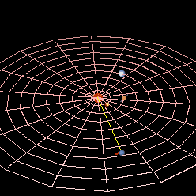

|
Some of the earliest known telescopic observations ever, Galileo's drawings on 28 Dec. 1612 and 27 Jan.
1613 (New Style) contain plotted points that match what is now known to have been the positions of Neptune on those dates.
Both times, Galileo seems to have mistaken Neptune for a fixed star when it appeared close—in conjunction—to Jupiter in the night sky.
Hence, he is not credited with Neptune's discovery. At his first observation in Dec. 1612, Neptune was almost stationary
in the sky because it had just turned retrograde that day. This apparent backward motion is created when Earth's orbit takes
it past an outer planet. Because Neptune was only beginning its yearly retrograde cycle, the motion of the planet was far too
slight to be detected with Galileo's small telescope. In 2009, a study suggested that Galileo was at least aware that the star
he had observed had moved relative to fixed stars.
In 1821, Alexis Bouvard published astronomical tables of the orbit of Uranus. Subsequent observations revealed substantial deviations
from the tables, leading Bouvard to hypothesize that an unknown body was perturbing the orbit through gravitational interaction.In 1843,
John Couch Adams began work on the orbit of Uranus using the data he had. He requested extra data from Sir George Airy, the Astronomer Royal,
who supplied it in February 1844. Adams continued to work in 1845–1846 and produced several different estimates of a new planet.
In 1845–1846, Urbain Le Verrier, developed his own calculations independently from Adams, but aroused no enthusiasm among his compatriots.
In June 1846, upon seeing Le Verrier's first published estimate of the planet's longitude and its similarity to Adams's estimate, Airy persuaded
James Challis to search for the planet. Challis vainly scoured the sky throughout August and September.Challis had, in fact, observed Neptune a
year before the planet's subsequent discoverer, Johann Gottfried Galle, and on two occasions, 4 and 12 August 1845. However, his out-of-date star
maps and poor observing techniques meant that he failed to recognize the observations as such until he carried out later analysis. Challis was full
of remorse but blamed his neglect on his maps and the fact that he was distracted by his concurrent work on comet observations.
|
|
|
|
|
|
|
|
Galileo Galilei may have first sighted Neptune
Urbain Le Verrier mostly successfully predicted Neptune's position
|
|
The average distance between Neptune and the Sun is 4.5 billion km (about 30.1 astronomical units (AU), the mean distance
from the Earth to the Sun), and it completes an orbit on average every 164.79 years, subject to a variability of around ±0.1 years.
The perihelion distance is 29.81 AU, and the aphelion distance is 30.33 AU.[i] Neptune's orbital eccentricity is only 0.008678, making
it the planet in the Solar System with the second most circular orbit after Venus. The orbit of Neptune is inclined 1.77° compared to that of Earth.
On 11 July 2011, Neptune completed its first full barycentric orbit since its discovery in 1846; it did not appear at its exact discovery position in
the sky because Earth was in a different location in its 365.26-day orbit. Because of the motion of the Sun in relation to the barycentre of the Solar
System, on 11 July, Neptune was not at its exact discovery position in relation to the Sun—if the more common heliocentric coordinate system is used,
the discovery longitude was reached on 12 July 2011
The axial tilt of Neptune is 28.32°, which is similar to the tilts of Earth (23°) and Mars (25°). As a result, Neptune experiences seasonal changes
similar to those on Earth. The long orbital period of Neptune means that the seasons last for forty Earth years. Its sidereal rotation period (day)
is roughly 16.11 hours. Because its axial tilt is comparable to Earth's, the variation in the length of its day over the course of its long year is not
any more extreme.
Because Neptune is not a solid body, its atmosphere undergoes differential rotation. The wide equatorial zone rotates with a period of about 18 hours,
which is slower than the 16.1-hour rotation of the planet's magnetic field. By contrast, the reverse is true for the polar regions where the rotation period
is 12 hours. This differential rotation is the most pronounced of any planet in the Solar System, and it results in strong latitudinal wind shear.
| |
|
|
|
|
|
|

Neptune (red arc) completes one orbit around the Sun (centre) for every 164.79 orbits of Earth.
The light blue dot represents Uranus.
|